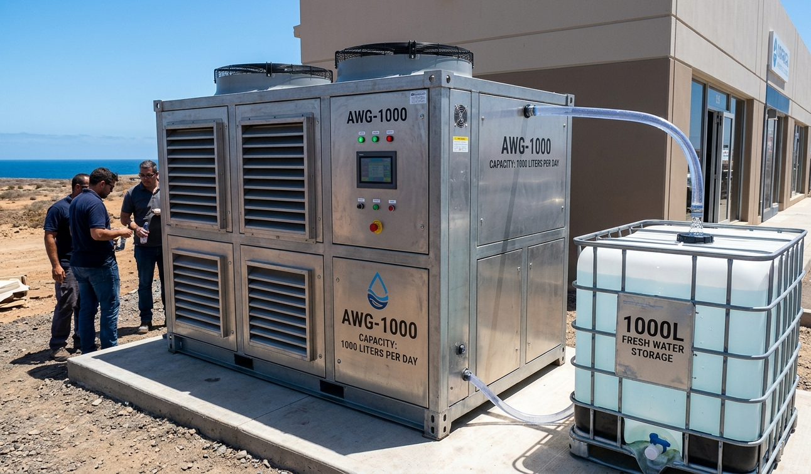

Manitoba's remote and fly-in First Nations continue to face long-standing drinking-water advisories despite federal investment. As of February 2026, 5 long-term and 9 short-term advisories affect thousands of residents who depend on costly trucked or bottled water. This case study evaluates a decentralized, renewable-powered hybrid system — combining Atmospheric Water Generation (AWG) and Reverse Osmosis (RO) — as a rapidly deployable alternative to centralized infrastructure.
Using performance data, cost modelling, and a hypothetical pilot at Shamattawa First Nation, we show the AWG-RO hybrid can deliver 8,000–20,000 L/day at $0.03–$0.08/L — a 70–80% reduction versus trucking — while operating off-grid at temperatures down to −50 °C and creating 5–10 local jobs per deployment.
1.Introduction & Background
Water is life — yet for millions across the globe, and for thousands within Canada's own borders, access to clean and reliable drinking water remains uncertain. Manitoba, a province with more than 100,000 lakes, paradoxically hosts some of the country's most persistent drinking-water advisories. The communities affected are overwhelmingly remote, fly-in, and Indigenous.
Aarvish Global LTD — an Indigenous-owned, Manitoba Métis Federation-registered company based in Winnipeg — was founded to close this gap with engineering rather than logistics. This case study presents the technical rationale, system design, performance modelling, and projected impact of the company's decentralized AWG-RO hybrid platform.
"The water crisis is ongoing and costly — residents in Island Lake communities have paid upward of $50 for a single case of bottled water, a basic necessity unavailable from the tap."
2.The Problem: Manitoba's Ongoing Water Crisis
Fly-in reserves in northern Manitoba endure harsh winters, limited road access, and aging infrastructure. Centralized treatment plants — where they exist — fail under climate stress, freeze in winter, and cost millions to build and maintain. The result is a cycle of advisories, trucking, and evacuations.
2.1 — Current State (February 2026)
Federal data records 14 active advisories in Manitoba: 5 long-term (active > 1 year) and 9 short-term. Some have persisted for the better part of a decade.
2.2 — Households Affected by Long-Term Advisories
2.3 — Why Centralized Solutions Fall Short
- Health risks: chronic exposure to waterborne pathogens; reliance on bottled water drives plastic waste and dehydration.
- Economic burden: trucking costs $0.10–$0.50/L; governments have invested $24M+ in Manitoba water infrastructure with persistent gaps.
- Climate vulnerability: ice roads fail, pipes freeze, and spring floods contaminate intakes — centralized plants have no redundancy.
- Construction timelines: a new centralized plant takes 2–5 years and tens of millions of dollars; communities under advisory cannot wait.
3.Methodology
This case study draws on three inputs: (1) Aarvish's internal engineering specifications and bench-test data for AWG and RO modules; (2) published cost figures for water trucking and centralized treatment in remote Canadian communities; and (3) a modelled pilot deployment at Shamattawa First Nation using site-typical climate parameters (humidity, wind speed, temperature range).
Performance figures (output, energy use, uptime) are presented as ranges reflecting seasonal variation. Economic projections use 2026 CAD and assume federal/provincial grant co-funding consistent with current Indigenous clean-technology programs. Environmental figures derive from diesel-displacement calculations at standard emission factors.
4.The Solution: Decentralized AWG-RO Hybrid
Rather than piping water from a distant plant, the Aarvish system produces water on site from two independent sources — the air itself (AWG) and local surface water (RO) — powered entirely by wind and solar. The two technologies are complementary: AWG yields mineral-rich alkaline drinking water; RO delivers high-volume household supply. Together they remove the single-point-of-failure risk inherent in centralized systems.
4.1 — Core Components
- Atmospheric Water Generation (AWG): condenses moisture from air via refrigeration/desiccant cycles; output is alkaline (pH 9–10) and re-mineralized. Desiccant-assisted mode sustains yield in low-humidity Manitoba winters.
- Reverse Osmosis (RO): multi-stage pre-filtration plus a high-rejection membrane removes 95–99% of total dissolved solids, bacteria, and chemical contaminants from local surface water.
- Renewable power: portable wind turbines + solar PV + battery buffer; sized for autonomous operation with solar backup when wind drops below threshold.
- Storage & IoT: insulated tanks prevent freezing; embedded sensors stream quality, flow, and energy data for remote oversight.



- Advisories lasting 6–9 years in some communities
- Trucked water at $0.10–$0.50/L; bottled water at $50/case
- Ice-road failures cause winter shortages and evacuations
- Centralized plants: 2–5 yr build, $5M–$50M, no redundancy
- Health, economic, and social burden falls on Indigenous communities
- Deploys in 4–6 weeks — water security in weeks, not years
- $0.03–$0.08/L — a 70–80% cost reduction
- Off-grid, −50 °C-rated; works through winter and floods
- Dual-source redundancy — no single point of failure
- Community-owned and operated; 5–10 local jobs created
5.Technical Performance Analysis
| Metric | AWG Component | RO Component | Hybrid System |
|---|---|---|---|
| Daily Output (Litres) | 1,000–5,000 | 5,000–15,000 | 8,000–20,000 |
| Energy Use (kWh/Litre) | 0.5–1.8 | 0.2–0.5 | 0.3–1.0 |
| Cold-Climate Uptime | 90%+ | 95%+ | 98%+ |
| Contaminant Removal | UV / HEPA / Mineral | 95–99% TDS | Full Spectrum |
| Output pH | 9–10 (alkaline) | 7–8 (neutral) | 7–10 (configurable) |
| Min Operating Temp | −40 °C | −50 °C (insulated) | −50 °C |
| Setup Time | 4–6 weeks | 6–8 weeks | 4–6 weeks |
5.1 — Seasonal Yield Profile
5.2 — Energy Source Mix
5.3 — Humidity vs. AWG Output
6.Economic Analysis
- Capital cost: $300K–$800K per unit, versus $5M–$50M for a centralized plant of comparable or lower output.
- Operating cost: $0.03–$0.08/L versus $0.10–$0.50/L for trucking — a 70–80% reduction.
- Pilot ROI (200 households): ~70% reduction in emergency water spending; $150K+ annual savings; 2–4 year payback.
- Funding fit: eligible for federal/provincial Indigenous clean-tech and climate-resilient-infrastructure grants.
7.Environmental Analysis
- Carbon: 15–30 tonnes CO₂ avoided per unit per year by displacing diesel trucking and generators.
- Water waste: RO concentrate (brine) is captured for non-potable reuse — near-zero liquid discharge.
- Climate resilience: one platform handles drought, flood, and freeze; no fixed pipeline to rupture.
- Scale impact: 50 units province-wide ≈ 150M+ L/yr capacity ≈ offsetting 1,000+ diesel truck runs annually.
8.Pilot Project: Shamattawa First Nation
Overview: a 6–12 month pilot in Shamattawa First Nation — under long-term advisory since 2018, 170 homes, fly-in only — chosen for its representative climate and clear need.
8.1 — Measurable Outcomes
Projected Pilot Results — Shamattawa
"A focused, measurable pilot — proving reliability and community impact before provincial scaling."
Aarvish Engineering Assessment, 20269.Broader Impacts & Scaling Pathway
- Social: advances Indigenous water sovereignty and economic self-determination — consistent with Aarvish's MMF registration and mission.
- Policy: supports federal advisory-elimination goals (132 long-term advisories lifted nationally since 2015) and Manitoba's climate priorities.
- Phase 1 — Pilot: Shamattawa; data, training, optimization.
- Phase 2 — Manitoba: 10+ communities under active advisory.
- Phase 3 — Regional: Saskatchewan, Ontario, Nunavut and other jurisdictions with similar needs.
| Phase | Units | Communities | Annual Capacity | Jobs Created | Est. CO₂ Avoided |
|---|---|---|---|---|---|
| Phase 1 — Pilot | 1 | 1 (Shamattawa) | ~2.9M L | 5–10 | 15–30 t/yr |
| Phase 2 — Manitoba | 10 | 8–12 | ~29M L | 50–100 | 150–300 t/yr |
| Phase 3 — Regional | 50 | 40–60 | 150M+ L | 250–500 | 750–1,500 t/yr |
10.Conclusion: Engineering a Thirst-Free Manitoba
Manitoba's water crisis is not a problem of scarcity — it is a problem of infrastructure. Decentralized AWG-RO hybrids reframe the question: instead of transporting water across failing ice roads, communities produce it on site, from air and local water, powered by wind and sun, owned and operated locally.
The engineering case is strong: 8,000–20,000 L/day, $0.03–$0.08/L, 98%+ uptime at −50 °C, 4–6 week deployment, and 15–30 tonnes of CO₂ avoided per unit per year. The human case is stronger still — water sovereignty for communities that have waited far too long.
Ready to pilot this in your community?
Aarvish Global LTD offers free site assessments, grant-alignment review, and rapid project planning — at no upfront cost to your community.
11.References & Sources
- Indigenous Services Canada — Drinking Water Advisories Registry, Manitoba (accessed February 2026).
- Government of Canada — "Ending long-term drinking water advisories on public systems on reserves" — progress report, 2015–2026.
- Aarvish Global LTD — Internal engineering specifications and bench-test data, AWG and RO modules (2025–2026).
- Aarvish Global LTD — Business plan and pilot deployment model, Shamattawa First Nation scenario (2026).
- World Health Organization — Guidelines for Drinking-Water Quality, 4th ed., parameters applied to system output targets.
- Manitoba Métis Federation — Member business registry (Aarvish Global LTD, Indigenous-owned designation).
- Standard emission factors for diesel road transport — applied to trucking-displacement CO₂ estimates.
Figures 1, 7, 8 and 9 are illustrative visualizations based on the data and ranges cited above; Figures 4–6 depict Aarvish AWG, RO, and renewable-power equipment. This case study presents a modelled pilot, not a completed installation.